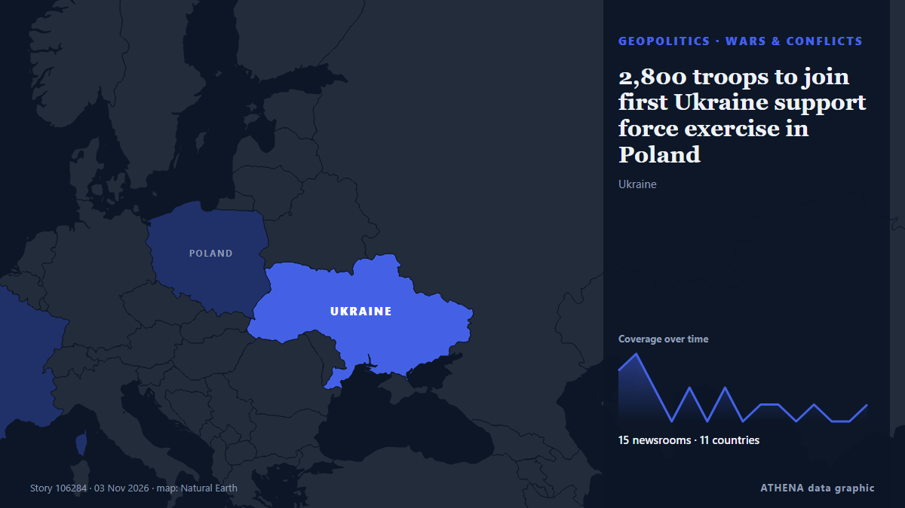

Войны и конфликты
СпонсорПри поддержке  Cybernetics and Artificial Intelligence Lab Welcome to the Cybernetics and Artificial Intelligence Laboratory, established at the Department of Business Administration of the National and Kapodistrian University of Athens. The lab is headed by Professor Dimitrios Thomakos. The lab aims to do research that can be published in top venues. Our research uses tools and methods of Artificial Intelligence, and lies in the following areas: - Forecasting - Decision making - Cyber security - Finance We are always looking forward to collaborating with exceptional students!
Cybernetics and Artificial Intelligence Lab Welcome to the Cybernetics and Artificial Intelligence Laboratory, established at the Department of Business Administration of the National and Kapodistrian University of Athens. The lab is headed by Professor Dimitrios Thomakos. The lab aims to do research that can be published in top venues. Our research uses tools and methods of Artificial Intelligence, and lies in the following areas: - Forecasting - Decision making - Cyber security - Finance We are always looking forward to collaborating with exceptional students!
| 22 окт. | 0 |
|---|---|
| 23 окт. | 0 |
| 24 окт. | 0 |
| 25 окт. | 0 |
| 26 окт. | 1 |
| 27 окт. | 0 |
| 28 окт. | 0 |
| 29 окт. | 0 |
| 30 окт. | 1 |
| 31 окт. | 4 |
| 1 нояб. | 4 |
| 2 нояб. | 6 |
| 3 нояб. | 6 |
| 4 нояб. | 1 |
Заголовки приводятся на английском языке, как они были опубликованы.

2,800 troops to join first Ukraine support force exercise in Poland
The drill will simulate moving troops and supplies such as food and fuel, and was agreed at a Coalition of the Willing summit in July. из The Independent
Death toll hits 29 after Russian strike on Ukrainian aid site, with 48 still missing
Russia launched 289 attack drones, 17 ballistic missiles and 59 cruise missiles across nine regions, President Zelenskyy said in an online post that noted the barrage coincided with U.S. elections. из NPR
War widens in the Black Sea in a test of NATO red lines
LONDON/BUCHAREST, Nov 3 - After seven strikes on cargo ships near NATO members Romania and Bulgaria last month, the US-led military alliance said it would deploy maritime patrol aircraft, radars and… из The Straits Times
Iran-US deal still out of reach despite heightened diplomatic efforts
Iran and the United States are far from reaching a deal to end the war, a senior Iranian official told Reuters on Tuesday, despite heightened diplomatic efforts to prevent a potential return to… из Arab News
Russian strike on Kharkiv hospital raises injury toll to 73
In Kharkiv, 73 people were injured as a result of a Russian attack on the night of November 3. из Ukrinform (English)
Putin orders private data centres to set aside 10% of capacity to support IT infrastructure
Russian data centers have become targets of Ukrainian drone attacks in recent weeks. из The Moscow Times
Greece inks deal for KC-390 fleet
The purchase, arranged via a government-to-government agreement between Greece and Portugal, covers three KC-390 aircraft with options for up to six manufactured by Brazilian planemaker Embraer. из Breaking Defense
Zelenskyy: Ukraine will halt strikes on Russian refineries if US provides interceptors
President Volodymyr Zelenskyy has informed US media that Ukraine will stop targeting Russian oil refineries in exchange for Patriot interceptor missiles or halted Russian attacks. из Ukrainska Pravda (English)
Israeli strikes kill three people in Gaza, medics say
Israeli strikes killed at least three Palestinians and wounded several others in the Gaza Strip on Monday, the territory’s health officials said. из Cyprus Mail
N. Korea tests 'dispersal warhead' for cruise missiles following cluster bomb test
SEOUL, Nov. 3 (Yonhap) -- North Korea has tested a "dispersal warhead" for a str... из Yonhap (English)
Oil prices plunge more than 4% as US-Iran talks raise hopes of ending war
Both oil benchmarks are down in early trading. из The Business Times
Iran Says Contacts Over Ending War Continue After Talks Finish With No Breakthrough
Contacts between Iran and the United States to end their eight-month war are continuing, Tehran said on Monday, after days of Iranian talks with Qatari mediators ended with altered proposals but no… из gCaptain
Oleshky ceasefire expires, Ukraine evacuates civilians from parts of Kherson region
Nov 1 - Ukraine's military said it evacuated 167 people from threatened areas of southern Kherson region on Sunday as a temporary local ceasefire expired — two days after buses carried residents out… из The Straits Times
Hebron governor says Israeli forces withdraw from city after 10-day siege
Hebron Mayor Youssef al-Jaabari says families forced from their homes can return and students can go to school. из Al Jazeera English
Saudi civil defence sounds all-clear after alerts in southern cities
Nov 2 - Saudi Arabia's civil defence authority on Monday said the threat had passed shortly after issuing alerts for the southern and western cities of Khamis Mushait, Abha, Taif and Najran, amid… из The Straits Times
Coalition Destroys 5 Houthi Ballistic Missiles, 4 Drones Fired at Saudi Arabia
Riyadh: Saudi forces on Tuesday intercepted a ballistic missile aimed at the kingdom's capital, said a spokesman for the Riyadh-led coalition backing Yemen's government, after auth... из Oman Observer
Trump says Iran war will end ‘very soon, one way or the other’
President Trump expressed optimism that the conflict with Iran would end soon, though he didn’t provide specific details on how this would occur. из Arab News
Ukraine claims strike on major Russian oil refinery near Moscow
Russia reports significant damage to an industrial facility in the Nizhny Novgorod region after a massive overnight drone attack, as Kiev claims it targeted the Kstovo oil refinery. из TRT World
Iran warns US, Israel against new attacks after Trump, Netanyahu threats
TEHERAN: Iran’s supreme leader warned the United States and Israel Saturday of fresh attacks following their threats to resume strikes after crucial elections, as fears increased over a return to… из New Straits Times